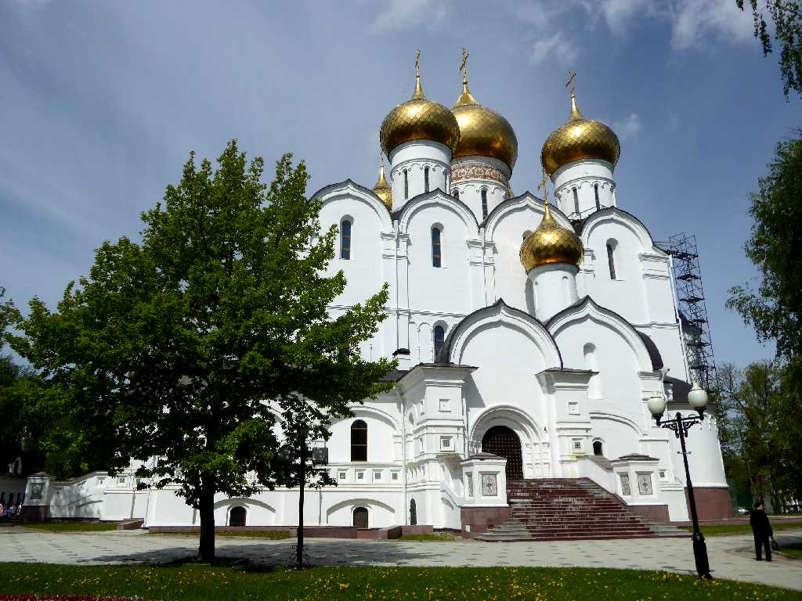
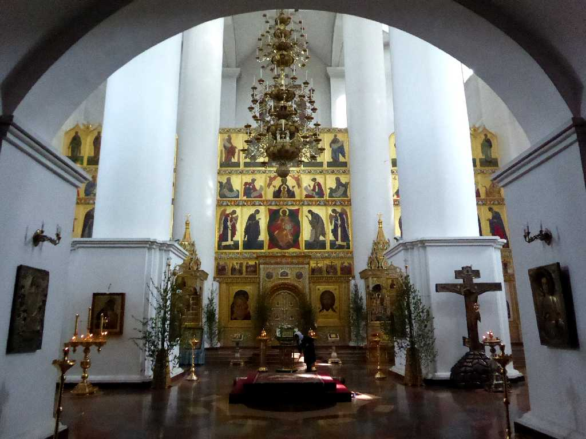
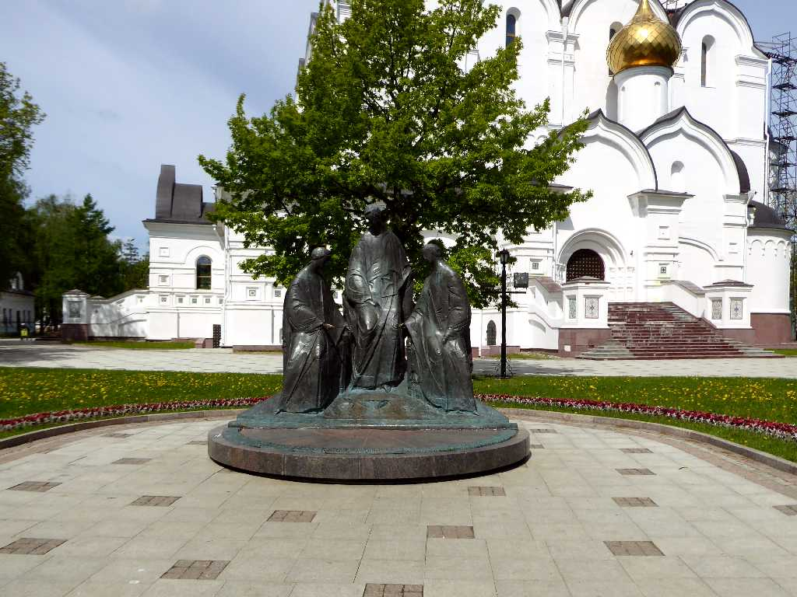
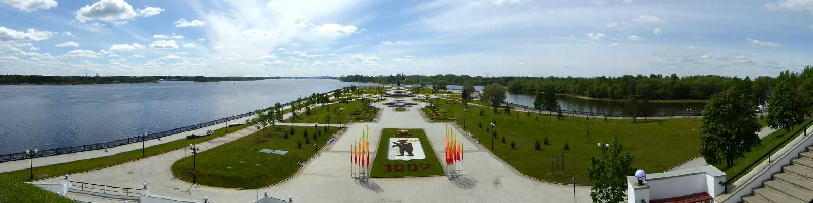
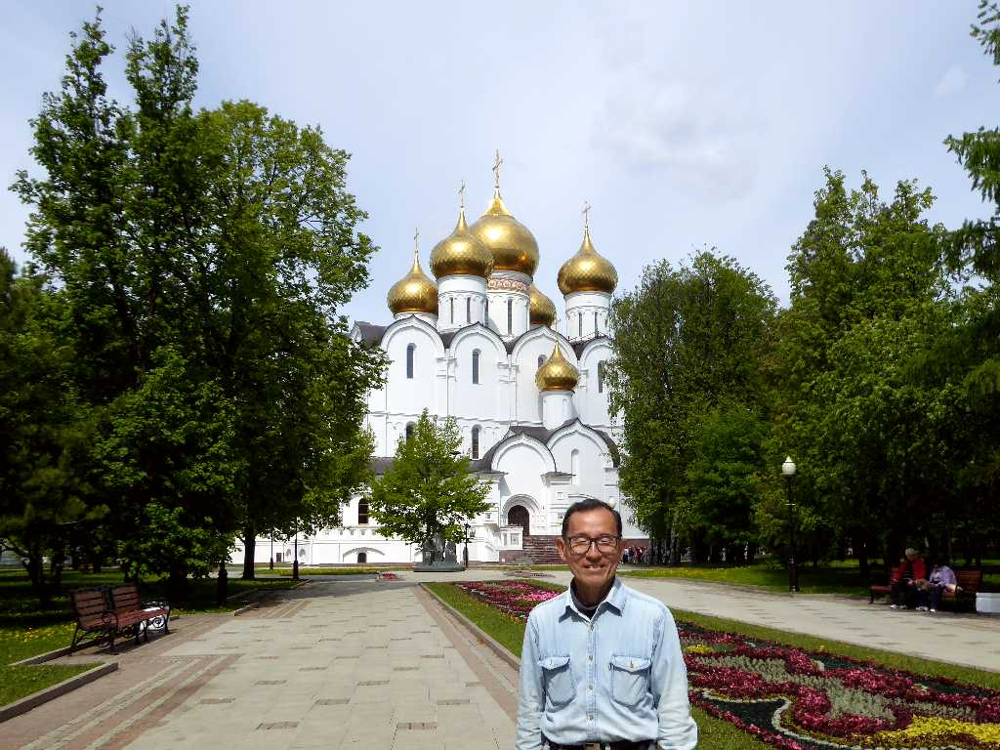

Uspensky Cathedral Historical Center Yaroslavl
ヤロスラヴリの生神女就寝大聖堂

Altar Church of Elijah the Prophet
生神女就寝大聖堂の祭壇

Trinity
三位一体像

Yaroslavl Strelka
ヴォルガ川にコトロスリ川がロストフの街から流れ込む合流地点に突き出したヤロスラヴリの矢

June 5 2017 Yaroslavl